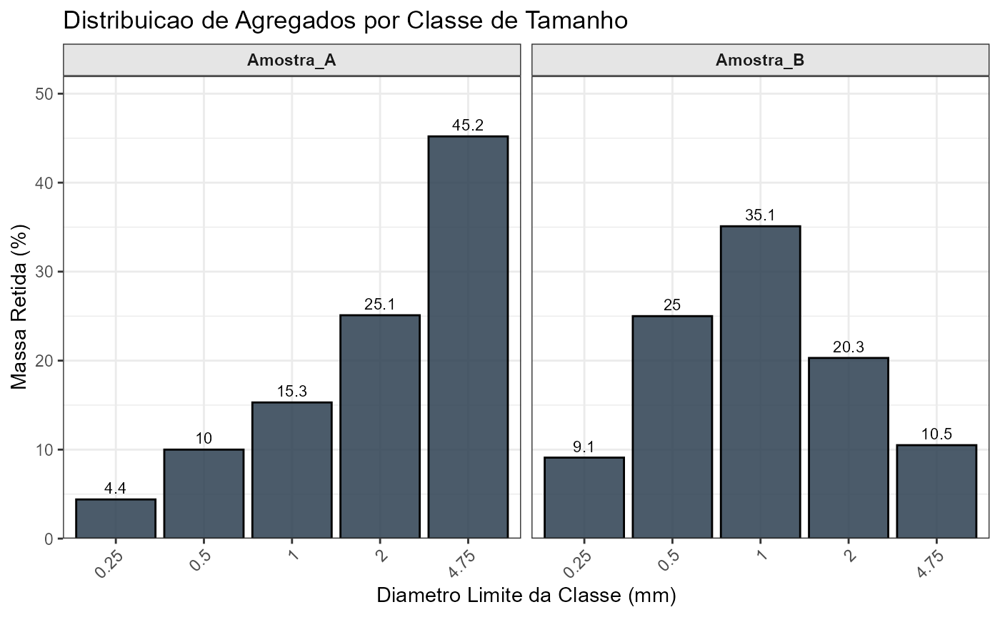
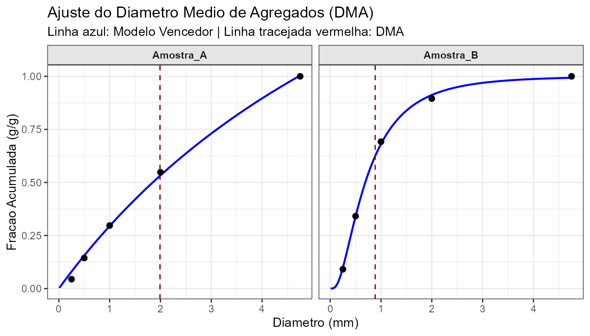

O pacote SoilAggregatesMD foi
desenvolvido para automatizar o cálculo e a análise da distribuição de
agregados do solo. O seu foco principal é a obtenção rápida e precisa do
Diâmetro Médio Ajustado (DMA), conforme proposto por
van Lier & Albuquerque (1997), testando automaticamente múltiplos
modelos não-lineares.
Neste tutorial rápido, vamos mostrar como realizar uma análise completa de peneiramento a partir de dados brutos.
1. Carregando o pacote e preparando os dados
Primeiro, carregamos o pacote. Para este exemplo, vamos criar um pequeno conjunto de dados simulando duas amostras de solo submetidas a peneiramento.
library(SoilAggregatesMD)
# Simulando dados de peneiramento para duas amostras
dados_exemplo <- data.frame(
amostra_id = rep(c("Amostra_A", "Amostra_B"), each = 5),
diametro_mm = rep(c(4.75, 2.00, 1.00, 0.50, 0.25), times = 2),
massa_g = c(
# Massa retida (g) para Amostra A (mais agregada)
45.2, 25.1, 15.3, 10.0, 4.4,
# Massa retida (g) para Amostra B (mais desagregada)
10.5, 20.3, 35.1, 25.0, 9.1
)
)
head(dados_exemplo)
#> amostra_id diametro_mm massa_g
#> 1 Amostra_A 4.75 45.2
#> 2 Amostra_A 2.00 25.1
#> 3 Amostra_A 1.00 15.3
#> 4 Amostra_A 0.50 10.0
#> 5 Amostra_A 0.25 4.4
#> 6 Amostra_B 4.75 10.52. A Análise Completa
A função principal do pacote é a analise_completa_dma().
Ela faz todo o trabalho pesado: 1. Processa as frações de massa e
diâmetros. 2. Calcula os índices tradicionais (DMP e DMG). 3. Testa 7
modelos matemáticos diferentes para a curva de retenção. 4. Seleciona o
modelo com o maior
e calcula o DMA.
resultados <- analise_completa_dma(
dados = dados_exemplo,
col_amostra = "amostra_id",
col_diametro = "diametro_mm",
col_massa = "massa_g"
)
# Visualizando o resumo com o modelo vencedor e o DMA calculado
resultados$resumo
#> # A tibble: 2 × 9
#> amostra_id DMP DMG DMA Modelo_Vencedor R2_Melhor Param_a Param_b
#> <chr> <dbl> <dbl> <dbl> <chr> <dbl> <dbl> <dbl>
#> 1 Amostra_A 2.06 1.52 1.99 Eq3 0.997 0.357 3.04
#> 2 Amostra_B 1.03 0.722 0.886 LogNormal 0.999 -0.371 0.786
#> # ℹ 1 more variable: Uso_Recomendado <chr>3. Diagnósticos Visuais
Com os resultados em mãos, o pacote oferece funções prontas para a visualização dos dados.
Podemos visualizar a distribuição percentual da massa retida em cada classe de diâmetro:
# O objeto df_processado é gerado internamente, mas podemos extraí-lo com prep_agregados
prep <- prep_agregados(dados_exemplo)
plot_distribuicao_agregados(prep$dados_processados)
E, mais importante, podemos visualizar o ajuste das curvas dos modelos vencedores e onde o DMA se posiciona graficamente para cada amostra:
plot_dma(
df_processado = prep$dados_processados,
df_dma = resultados$resumo
)
4. Exportando Resultados
Para integrar o SoilAggregatesMD ao seu fluxo de
trabalho, você pode exportar a lista de resultados gerada diretamente
para uma planilha do Excel usando a função
exportar_analise_xlsx():
# Salva um arquivo .xlsx no seu diretório de trabalho atual
exportar_analise_xlsx(resultados, "meus_resultados_agregados.xlsx")